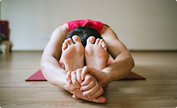
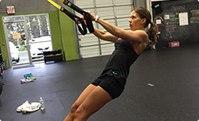
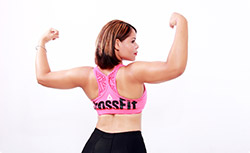
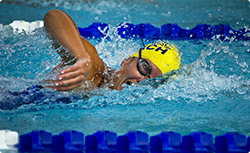

-

Фитнес
Фитнес - это основное направление в нашем центре. Открыто 6 залов для занятий с 7-00 до 22-00.
Работают 24 фитнес-тренера, есть авторские и классические программы для похудения, восстановления
фигуры, здоровья и молодости. Занятия с персональным тренером помогут достичь максимального
результата в сжатые сроки.
-

Личный диетолог
Поможет вам получить более заметный результат от тренировок. Создаст меню на каждый день, с учетом
вкусовых предпочтений и особенностей здоровья. Проанализирует текущий рацион и укажет на
ошибки. Поможет сделать питание разнообразным и полезным, объяснит доступно о важной роли
тех или иных витаминов и микроэлементов.
-

Йога
Гармония души и тела – это базовая составляющая здоровья и красоты. Наш зал для занятий йоги
открыт для людей всех возрастов без ограничений. Отдельным направлением является йога для
беременных с более щадящей программой. Йога тренеры имеют сертификаты и являются победителями
международных конкурсов..
-

Петли ТРХ
Новое направление для нашего центра, которое стало одним из самых популярных и востребованных.
Программа TRX Suspension Training создана для людей с начальным уровнем подготовки и позволяет
эффективно тренироваться, используя нарастающую нагрузку, которая зависит от силы и массы
человека. Петли усиливают ловкость, гибкость и подвижность. В нашем центре проводятся индивидуальные
и групповые тренировки ТРХ.
-

Кроссфит
Авторская запатентованная программа тренировки, включающая элементы тяжелой атлетики, занятий
с гирями, гимнастики. Данная программа безупречно подходит для ежедневных тренировок людям
с сидячим образом жизни. Преимущество кроссфита в том, что он одинаково хорошо воспринимается
и мужчинами, и женщинами и подходит для семейных групповых тренировок. Высокая эффективности
программы обусловлена чуткими рекомендациями наших сертифицированных тренеров.
-

Баcсейн
Большой 50 метровый бассейн, разделенный на 6 дорожек, позволит заниматься индивидуальным
плаванием или аквааэробикой. Занятия проводит сертифицированный тренер – Ситник Ирина Валерьевна,
известная своими успехами в школе подготовки олимпийского резерва. В бассейне есть место
для занятий с детьми (ежедневно с 12-00 до 14-00), а также проводится аквааэробика для беременных
каждый день в 10-00 и 19-00.